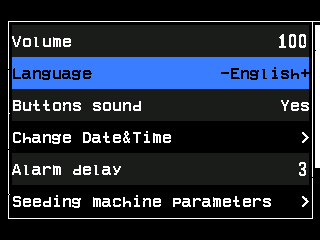

Écrans, menus, menus contextuels et fenêtres
Les éléments par lesquels tout se fait sur le Hectare Mini — écrans de travail, menus, menu contextuel d'un appareil, fenêtres qui interrogent ou informent, et niveaux d'accès.
Tout se passe sur le panneau par les écrans de travail, les menus, le menu contextuel d'un appareil et les fenêtres qui vous posent une question ou vous informent. Les nombres se saisissent sur le pavé numérique.
Les écrans de travail
« HOME » passe d'un écran de travail au suivant, toujours dans cet ordre :
| Écran | Affiché |
|---|---|
| Écran d'accueil | Toujours. |
| Tableau de semis | Toujours. |
| Statistiques | Toujours. |
| Motors | Seulement si la machine a des moteurs de doseur ou des actionneurs de jalonnage, et seulement au-dessus du niveau d'accès Operator. |
| Régulation de dose | Toujours. Un nouvel appui sur « HOME » ramène à l'écran d'accueil. |
« BACK » ramène à l'écran d'accueil depuis le tableau de semis, les statistiques et l'écran Motors. L'écran de régulation de dose ne se quitte qu'avec « HOME ».

Menus
« MENU » ouvre le menu de l'écran affiché — sur l'écran d'accueil, le menu principal.

- Élément sélectionné. Texte noir sur une bande bleue. « UP » et « DOWN » déplacent la bande ; en fin de liste, elle saute à l'autre extrémité.
- Valeur entre − et +. Affichée sur l'élément sélectionné : modifiez-la avec « PLUS » et « MINUS », directement dans la liste.
- Valeur d'un élément non sélectionné. Les signes − et + apparaissent quand vous le sélectionnez.
- Pointe de flèche. L'élément ouvre un autre menu. Appuyez sur « MENU ».
- Barre de défilement. La liste est plus longue que l'écran.
| Ce que vous voyez à droite | Ce que cela fait |
|---|---|
| Une pointe de flèche | Ouvre un autre menu. Appuyez sur « MENU ». |
| Une valeur entre - et + | « PLUS » et « MINUS » la modifient pas à pas. |
| Une valeur entre -[ et ]+ | « PLUS » et « MINUS » la modifient pas à pas ; « MENU » ouvre le pavé numérique pour la saisir. |
| Rien | L'élément exécute une action. Appuyez sur « MENU ». |
Vous pouvez aussi toucher un élément pour le sélectionner, puis le toucher de nouveau pour l'ouvrir. « BACK » quitte un menu et remonte d'un niveau.
Le menu contextuel d'un appareil
Chaque capteur de l'écran d'accueil, de l'écran de régulation de dose et de l'écran Motors a son propre menu. Maintenez « MENU » jusqu'à ce qu'un appareil s'affiche sur fond blanc — c'est le mode de réglage des capteurs —, puis sélectionnez l'appareil avec « UP » et « DOWN » et appuyez sur « MENU ». Comment travailler dans ce mode : Mettre un capteur sous ou hors surveillance. Les éléments de chaque menu contextuel figurent dans Réglages des capteurs.

Fenêtres qui interrogent, fenêtres qui informent
Une fenêtre de question porte une bande jaune avec « Confirmation ». Les lignes sous la question nomment les deux boutons qui y répondent — ils changent d'une fenêtre à l'autre, lisez-les. Les « Yes » (oui) vert et « No » (non) rouge de l'écran peuvent aussi être touchés. « BACK », ou un toucher en dehors de la fenêtre, annule toujours.

Une fenêtre d'information porte une bande bleue avec « Information ». Elle se ferme d'elle-même, par un toucher ou par un bouton.
Fenêtres d'alarme

- Bande rouge. « FAILURE! » (défaillance) — la fenêtre signale un défaut.
- Indication. « HOME » ferme la fenêtre.
- Le défaut. Ici, la liaison avec un capteur est perdue.
- Type du capteur. Ici, la turbine.
- Numéros des capteurs. Lorsque plusieurs capteurs du même type ont le même défaut, tous leurs numéros sont listés.
- « Close ». Touchez-le pour fermer la fenêtre.
Tant que la fenêtre est affichée, le panneau émet le signal d'alarme et allume son voyant d'alarme. « HOME » ou un toucher sur « Close » ferme la fenêtre ; « HOME » maintenu la ferme et revient à l'écran d'accueil. Les autres boutons ne font rien ici. Toutes les alarmes et la conduite à tenir : Comment fonctionnent les alarmes.
Niveaux d'accès
| Niveau | Ce qu'il ouvre |
|---|---|
| « Operator » (opérateur) | Ce qu'il faut pour le travail. Actif à chaque mise sous tension. Seul niveau auquel les fenêtres d'alarme s'affichent. |
| « Agronomist » (agronome) | Éléments et paramètres masqués de la machine et des capteurs. Demande un code figurant sur la fiche technique de votre panneau. |
| « Service » (maintenance) | Le profil et le reste du travail de mise en service — réservé au service technique. La configuration des capteurs de graines et de pression ne demande que le niveau « Agronomist ». |
Le niveau se choisit dans « Settings » → « User » (utilisateur). Comment : Activer le niveau Agronomist. Dans ce manuel, un paramètre qui demande un niveau plus élevé l'indique.
Votre machine fait quelque chose que cette page n'explique pas ? Écrivez à support@agriwelt.com — un ingénieur vous répond.